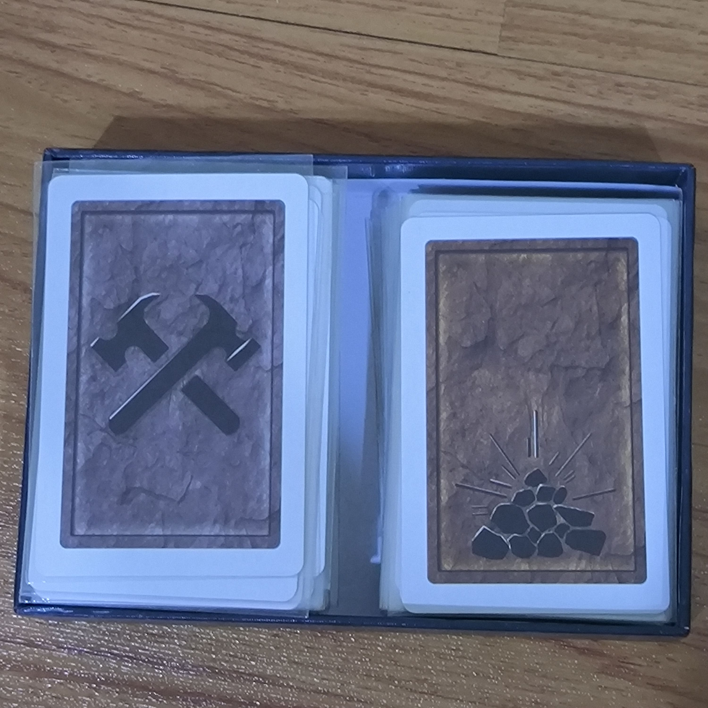

-

- |
- Boardgames

How to play : Saboteur
การตั้งค่าเกม
- จำนวนผู้เล่น: 3-10 คน
- เตรียมส่วนประกอบ:
- การ์ดบทบาท (Roles): คนขุดแร่และคนบ่อนทำลาย
- การ์ดเส้นทาง (Path): การ์ดที่ใช้สร้างเส้นทางไปยังทองคำ
- การ์ดเป้าหมาย (Goal): การ์ดเป้าหมาย 3 ใบ (1 ใบทองคำ และ 2 ใบหิน)
- การ์ดการกระทำ (Action): การ์ดสำหรับขัดขวางหรือช่วยในการขุดแร่
- เหรียญทอง (Gold Nuggets): สำหรับนับคะแนน
- แจกการ์ดบทบาท:
- จำนวนการ์ดบทบาทจะแตกต่างกันไปตามจำนวนผู้เล่น เช่น:
- 3-5 คน: 1 Saboteur
- 6-7 คน: 2 Saboteurs
- 8-10 คน: 3 Saboteurs
- สับการ์ดบทบาทและแจกให้ผู้เล่นแต่ละคนอย่างลับ ๆ
- จัดเตรียมการ์ดเส้นทาง:
- วางการ์ดเริ่มต้น (Start) และการ์ดเป้าหมาย 3 ใบคว่ำหน้าในระยะที่กำหนดจากการ์ดเริ่มต้น
วิธีการเล่น
- การเล่นเทิร์น:
- ในแต่ละเทิร์น ผู้เล่นจะทำสิ่งต่อไปนี้:
- วางการ์ดเส้นทาง (Path Card) เพื่อสร้างเส้นทางจากการ์ดเริ่มต้นไปยังการ์ดเป้าหมาย
- เล่นการ์ดการกระทำ (Action Card) เพื่อช่วยเหลือหรือต่อต้านผู้เล่นคนอื่น
- ทิ้งการ์ด 1 ใบ จากมือแล้วดึงการ์ดใหม่จากกองการ์ด
- การใช้การ์ดเส้นทาง:
- วางการ์ดเส้นทางที่ต่อเนื่องจากการ์ดเส้นทางที่มีอยู่ เพื่อสร้างเส้นทางไปยังการ์ดเป้าหมาย
- การใช้การ์ดการกระทำ:
- การ์ดเครื่องมือ (Tools): เช่น Pickaxe, Cart, Lamp สำหรับช่วยในการขุดแร่หรือบ่อนทำลาย
- การ์ดขัดขวาง (Block Cards): เช่น Break a Tool เพื่อขัดขวางการขุดแร่ของผู้เล่นคนอื่น
- การ์ดซ่อมแซม (Repair Cards): เช่น Fix a Tool เพื่อซ่อมแซมเครื่องมือที่ถูกทำลาย
- การเปิดการ์ดเป้าหมาย:
- เมื่อผู้เล่นสามารถสร้างเส้นทางไปยังการ์ดเป้าหมายได้สำเร็จ การ์ดเป้าหมายจะถูกเปิดเผย
- หากเป็นการ์ดทองคำ ทีมคนขุดแร่จะชนะ
- หากเป็นการ์ดหิน การเล่นจะดำเนินต่อไป
- การจบเกม:
- เกมจะจบเมื่อเส้นทางไปยังการ์ดทองคำถูกสร้างเสร็จหรือเมื่อการ์ดในกองหมด
- ผู้เล่นจะเปิดเผยบทบาทของตนเองและนับคะแนนจากเหรียญทอง